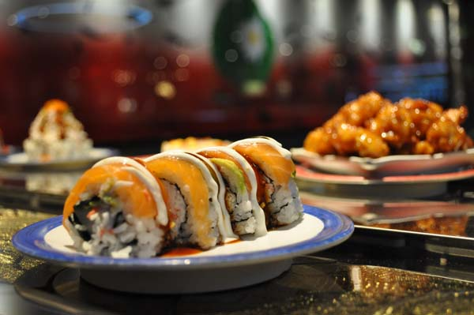
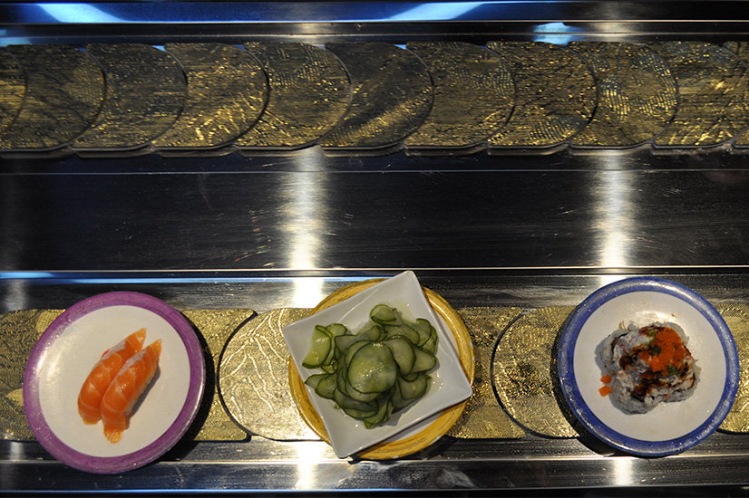

Follow us on twitter to see what others are saying about @MaruSpokane today! Tag us with your favorite Sushi Maru Memory!
Post your favorite photos and tag us with #sushimaru to let us know what sensational dishes you will be induglging in while visiting us!
| Day | Hours [a.m. - p.m.] |
|---|---|
| Monday | 11:00 - 9:30 |
| Tuesday | 11:00 - 9:30 |
| Wednesday | 11:00 - 9:30 |
| Thursday | 11:00 - 9:30 |
| Friday | 11:00 - 10:00 |
| Saturday | 11:00 - 10:00 |
| Sunday | 12:00 - 9:00 |